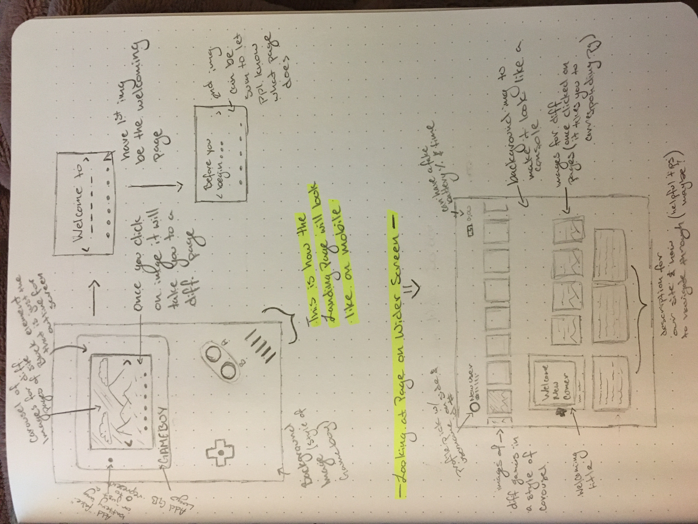
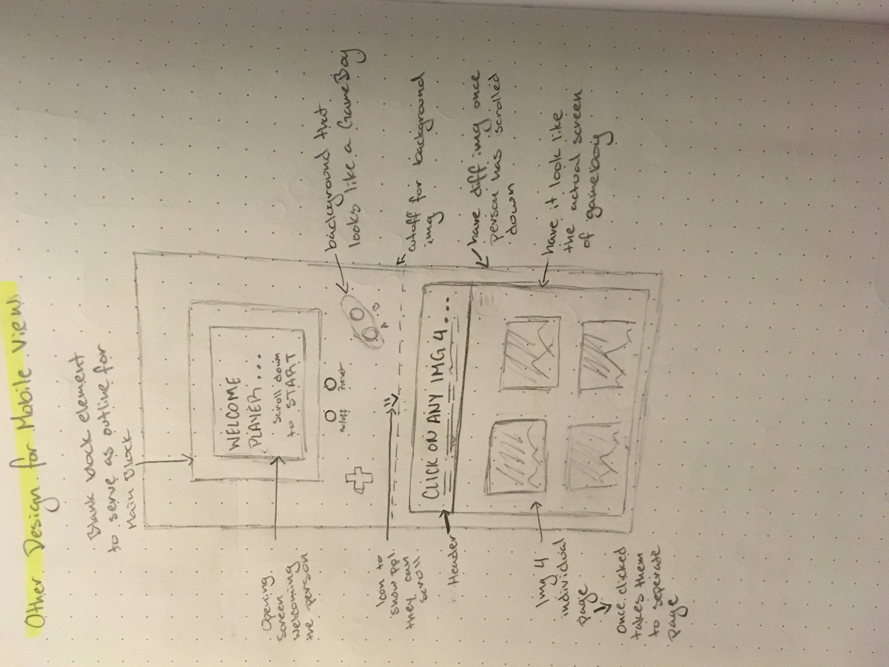

Challenge For Today
Todays big idea for Lab 21 was to take our ideas from Lab 20 and
further develop a few of our sketches.
We had to show our ideas to our group and get some feedback
from them, that way we were able to have an idea on how the further
develop sketch would look like.
Problems
For this lab, there weren't really any problems that showed up.
We kinda started working on this lab a bit during our class
time on Monday, we spent time with our group and showed eachother
our sketches we had came up with, for Lab 20. From that point on,
we all talked about what we liked about each of our sketch and gave
eachother some feedback. From there on, we all talked about how the
different pages would look like, and how to make them so they can
be responsive on different screen sizes.
Feedback
Here is the feedback I received from the rest of the group.
One of the sketched the whole group liked was the idea of
having the landing page look like some sort of console. They took
the GameBoy screen, from my sketches, as the one they liked. The
only concern about that design is how would it be responsive.
Here is what my group had to say:
- How would the sketch be responsive?
- Would the background be an image or would we have to make the
seperate elements/ images?
- Have different designs for different screen sizes, that way
it can be responsive and look good.
- Having the Gameboy design sketch would look better once the
site is being seen on a mobile device.
- For a other screen sizes, it can look like a different console
screen.
- Might keep the Distraction Page
My Results

